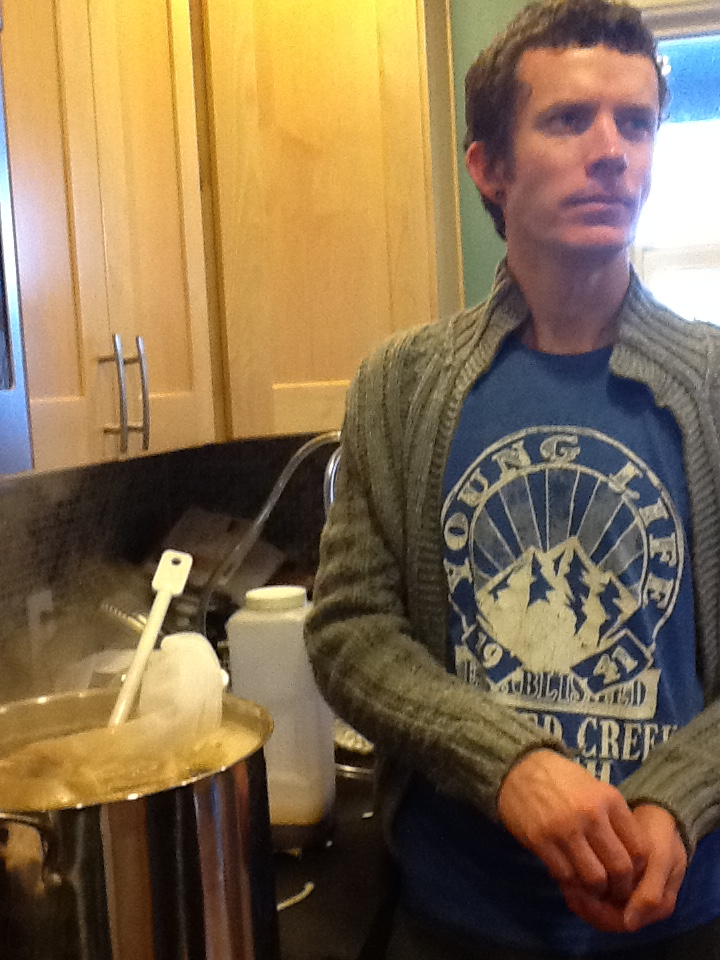

Josiah "I may get older but I refuse to grow up" Price aka. Price Krispy
Josiah Adam Price directly evolved from a baboon. He was raised in Arizona and when he first met Belle Price he considered himself well out of her league. When he learned of her head trauma and resulting impairment, he wasted no time in taking advantage of the opportunity. They married a year after they met. Josiah wakes up daily and is thankful for the blessing of his irreplaceable family
Josiah currently works as a science teacher at Tumwater High School...partially because he likes science...partially because he likes kids...mostly because he is afraid to grow up.